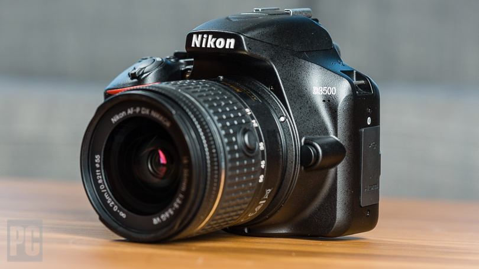
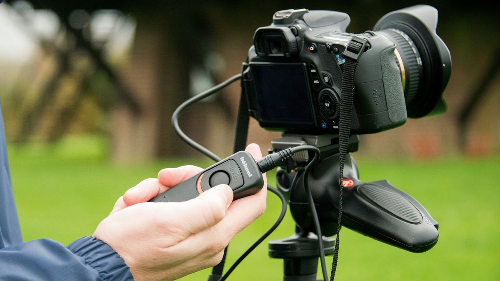
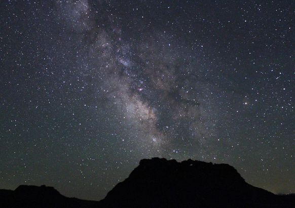

In order to take great photos of the night sky. You must understand your camera and each funciton
As it's dark, exposure times shooting the night sky will be long. Try not to use cheao tripods since it could cause your camera to move in the wind or your camera is top heavy.
You will need a camera that goes into manual mode. Manual mode helps you take full control over you camera settings such as Iso, exposure, aperature, and other functions
Since your camera will have to remain completely still, having a clicker will help ensure that the camera does not shake and cause streaks in your photos.
As mentioned, you must be in a secluded area with little to no light pollution. The darker the area the best results you will get.
If you want wide landscape photos like the one above, you have to get a wide range lens. You can use lens that came with the camera or the ones you have bought but the lens must have a aperature of f/2.8 or below.
Depending on how long you stay out, its important to stay warm since it will all depend on how long you want your camera to take a photo. It could be 10-15 seconds or a couple hours.